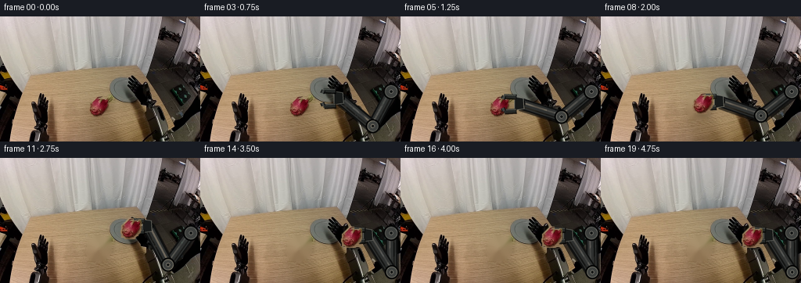
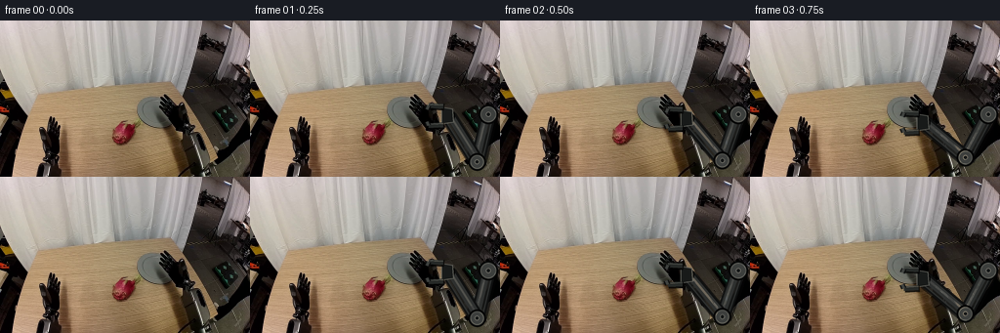

CODING AGENTS AS PIXEL WORLD MODELS
traex/GPT-5.6-Sol · common50_0038
点击播放 · 原生 RGB 像素
逐轮保存的候选
回放视频、检查图与代码变化。
每份候选均可单独播放。实际图片检查记录在下方工具轨迹中。
候选 01播放与检查图
点击播放 · 原生 RGB 像素


展开代码变化
--- 上一保存版本
+++ 本次保存版本
@@ -0,0 +1,268 @@
+"""Generate a deterministic rigid-arm pick-up sequence from first_frame.png.
+
+The scene is intentionally kept fixed. The only synthesized motion is an
+articulated, constant-link-length arm on the right and the source dragon fruit
+which is translated (never deformed) after the gripper closes around it.
+"""
+
+from pathlib import Path
+import math
+
+import cv2
+import numpy as np
+from PIL import Image, ImageDraw
+from scipy.ndimage import binary_fill_holes
+
+import artifact_io
+
+
+CASE_DIR = Path(__file__).resolve().parent
+SCALE = 4
+
+
+def smoothstep(x):
+ x = float(np.clip(x, 0.0, 1.0))
+ return x * x * (3.0 - 2.0 * x)
+
+
+def largest_component(mask):
+ n, labels, stats, _ = cv2.connectedComponentsWithStats(mask.astype(np.uint8), 8)
+ if n <= 1:
+ raise RuntimeError("dragon-fruit mask was not found")
+ index = 1 + int(np.argmax(stats[1:, cv2.CC_STAT_AREA]))
+ return labels == index
+
+
+def prepare_fruit(base):
+ """Extract the red fruit and produce a clean plate beneath it."""
+ h, w = base.shape[:2]
+ yy, xx = np.mgrid[:h, :w]
+ r = base[:, :, 0].astype(np.float32)
+ g = base[:, :, 1].astype(np.float32)
+ b = base[:, :, 2].astype(np.float32)
+
+ # The bounds isolate the central fruit from similarly warm table details.
+ red = ((r > 52) & (r > 1.27 * g) & (r > 1.075 * b) &
+ (xx >= 108) & (xx <= 145) & (yy >= 98) & (yy <= 133))
+ fruit_core = largest_component(red)
+ fruit_core = binary_fill_holes(fruit_core)
+ fruit_core = cv2.morphologyEx(fruit_core.astype(np.uint8), cv2.MORPH_CLOSE,
+ np.ones((3, 3), np.uint8))
+ # Include the softly shaded skin boundary around the strongly red core.
+ silhouette = cv2.dilate(fruit_core, np.ones((3, 3), np.uint8), iterations=1)
+ alpha = cv2.GaussianBlur(silhouette.astype(np.float32), (0, 0), 0.55)
+ alpha = np.clip(alpha, 0.0, 1.0)
+
+ ys, xs = np.where(silhouette > 0)
+ x0, x1 = int(xs.min()) - 2, int(xs.max()) + 3
+ y0, y1 = int(ys.min()) - 2, int(ys.max()) + 3
+ patch = base[y0:y1, x0:x1].copy()
+ patch_alpha = alpha[y0:y1, x0:x1].copy()
+
+ # Inpaint a slightly wider area so no red fringe remains when it is lifted.
+ hole = cv2.dilate(silhouette, np.ones((7, 7), np.uint8), iterations=1) * 255
+ clean = cv2.inpaint(base, hole, 4.0, cv2.INPAINT_TELEA)
+ # Keep reconstruction local; all untouched pixels stay bit-identical.
+ plate = base.copy()
+ plate[hole > 0] = clean[hole > 0]
+
+ # The detected fruit's visual center in frame 00 is approximately (126,115).
+ center = np.array([126.0, 115.0])
+ crop_center = np.array([center[0] - x0, center[1] - y0])
+ return patch, patch_alpha, crop_center, plate, silhouette.astype(bool)
+
+
+def ik_elbow(shoulder, wrist, l1=50.0, l2=56.0):
+ """Two-link IK with a stable, upward-bending elbow solution."""
+ s = np.asarray(shoulder, np.float64)
+ w = np.asarray(wrist, np.float64)
+ delta = w - s
+ d = float(np.linalg.norm(delta))
+ d = float(np.clip(d, abs(l2 - l1) + 0.01, l1 + l2 - 0.01))
+ unit = delta / max(np.linalg.norm(delta), 1e-6)
+ a = (l1 * l1 - l2 * l2 + d * d) / (2.0 * d)
+ height = math.sqrt(max(0.0, l1 * l1 - a * a))
+ midpoint = s + a * unit
+ # Rotating clockwise in image coordinates places the elbow above the links.
+ normal = np.array([unit[1], -unit[0]])
+ return midpoint + height * normal
+
+
+def S(value):
+ if isinstance(value, (tuple, list, np.ndarray)):
+ return tuple(int(round(float(v) * SCALE)) for v in value)
+ return int(round(float(value) * SCALE))
+
+
+def polygon_around(a, b, half_width):
+ a = np.asarray(a, float)
+ b = np.asarray(b, float)
+ v = b - a
+ v /= max(np.linalg.norm(v), 1e-6)
+ n = np.array([-v[1], v[0]]) * half_width
+ return [tuple(a + n), tuple(b + n), tuple(b - n), tuple(a - n)]
+
+
+def draw_arm(size, shoulder, elbow, wrist, jaw_gap, opacity=1.0):
+ """Render rigid graphite links and a two-finger gripper at high resolution."""
+ w, h = size
+ layer = Image.new("RGBA", (w * SCALE, h * SCALE), (0, 0, 0, 0))
+ d = ImageDraw.Draw(layer, "RGBA")
+
+ def col(rgb, a=255):
+ return (*rgb, int(round(a * opacity)))
+
+ sh, el, wr = map(np.asarray, (shoulder, elbow, wrist))
+
+ # Contact shadows and dark rubber perimeter give the links scene-matched depth.
+ for a, b in ((sh, el), (el, wr)):
+ d.line([S(a + (1.2, 1.8)), S(b + (1.2, 1.8))], fill=col((5, 5, 5), 155),
+ width=S(17))
+ for a, b in ((sh, el), (el, wr)):
+ d.line([S(a), S(b)], fill=col((15, 16, 16), 255), width=S(15))
+ d.line([S(a), S(b)], fill=col((46, 48, 47), 255), width=S(11))
+ # Offset metallic inset: fixed to each rigid member, not screen lighting.
+ direction = b - a
+ direction /= max(np.linalg.norm(direction), 1e-6)
+ normal = np.array([-direction[1], direction[0]])
+ d.line([S(a + normal * 2.0), S(b + normal * 2.0)],
+ fill=col((92, 94, 91), 180), width=S(2.2))
+ d.line([S(a - normal * 3.2), S(b - normal * 3.2)],
+ fill=col((24, 25, 24), 220), width=S(2.0))
+
+ # Circular revolute joints remain rigid and hide line joins.
+ for p, radius in ((sh, 10.0), (el, 9.0), (wr, 7.0)):
+ x, y = p
+ d.ellipse((S(x-radius), S(y-radius), S(x+radius), S(y+radius)),
+ fill=col((10, 11, 11), 255), outline=col((3, 3, 3), 255), width=S(1))
+ d.ellipse((S(x-radius+2), S(y-radius+2), S(x+radius-2), S(y+radius-2)),
+ fill=col((61, 63, 61), 255), outline=col((112, 113, 106), 190), width=S(1))
+ d.ellipse((S(x-2.4), S(y-2.4), S(x+2.4), S(y+2.4)),
+ fill=col((20, 22, 22), 255), outline=col((142, 142, 133), 180), width=S(0.8))
+
+ # Palm block; fingers point left toward the object.
+ palm_poly = [(wr[0]-7, wr[1]-9), (wr[0]+5, wr[1]-7),
+ (wr[0]+6, wr[1]+7), (wr[0]-7, wr[1]+9)]
+ d.polygon([S(p) for p in palm_poly], fill=col((24, 26, 25), 255),
+ outline=col((104, 105, 99), 220), width=S(1))
+
+ gap = float(jaw_gap)
+ # Slightly hooked parallel fingers surround the fruit without squashing it.
+ for sign in (-1.0, 1.0):
+ y0 = wr[1] + sign * gap / 2.0
+ p0 = np.array([wr[0]-5.0, y0])
+ p1 = np.array([wr[0]-20.0, y0 + sign * 0.7])
+ d.line([S(p0 + (1, 1)), S(p1 + (1, 1))], fill=col((3, 3, 3), 210), width=S(7))
+ d.line([S(p0), S(p1)], fill=col((38, 41, 39), 255), width=S(5.2))
+ d.line([S(p0 + (0, -1.2)), S(p1 + (0, -1.2))],
+ fill=col((101, 103, 97), 185), width=S(1.0))
+ tip0 = p1
+ tip1 = p1 + np.array([-1.7, -sign * 4.0])
+ d.line([S(tip0), S(tip1)], fill=col((12, 13, 13), 255), width=S(5.5))
+ d.line([S(tip0), S(tip1)], fill=col((62, 65, 62), 255), width=S(3.0))
+
+ layer = layer.resize((w, h), Image.Resampling.LANCZOS)
+ return np.asarray(layer)
+
+
+def alpha_over(rgb, rgba):
+ alpha = rgba[:, :, 3:4].astype(np.float32) / 255.0
+ out = rgb.astype(np.float32) * (1.0 - alpha) + rgba[:, :, :3].astype(np.float32) * alpha
+ return np.clip(out + 0.5, 0, 255).astype(np.uint8)
+
+
+def paste_fruit(frame, patch, alpha, crop_center, center):
+ """Translate the extracted fruit without scaling, warping, or deformation."""
+ ph, pw = patch.shape[:2]
+ x0 = int(round(center[0] - crop_center[0]))
+ y0 = int(round(center[1] - crop_center[1]))
+ x1, y1 = x0 + pw, y0 + ph
+ fx0, fy0, fx1, fy1 = max(0, x0), max(0, y0), min(frame.shape[1], x1), min(frame.shape[0], y1)
+ if fx0 >= fx1 or fy0 >= fy1:
+ return frame
+ px0, py0 = fx0 - x0, fy0 - y0
+ px1, py1 = px0 + (fx1 - fx0), py0 + (fy1 - fy0)
+ a = alpha[py0:py1, px0:px1, None].astype(np.float32)
+ dst = frame[fy0:fy1, fx0:fx1].astype(np.float32)
+ src = patch[py0:py1, px0:px1].astype(np.float32)
+ frame[fy0:fy1, fx0:fx1] = np.clip(dst * (1-a) + src * a + 0.5, 0, 255).astype(np.uint8)
+ return frame
+
+
+def add_soft_shadow(frame, center, lift):
+ """A restrained table shadow grounds the carried object during the lift."""
+ h, w = frame.shape[:2]
+ mask = np.zeros((h, w), np.float32)
+ cx, cy = int(round(center[0] + 2)), int(round(center[1] + 13 + 0.18 * lift))
+ axes = (max(5, int(round(10 + .18 * lift))), max(2, int(round(3 + .06 * lift))))
+ cv2.ellipse(mask, (cx, cy), axes, 0, 0, 360, 1.0, -1, cv2.LINE_AA)
+ mask = cv2.GaussianBlur(mask, (0, 0), 2.8)
+ strength = 0.16 * (1.0 - min(lift, 28.0) / 55.0)
+ return np.clip(frame.astype(np.float32) * (1.0 - mask[:, :, None] * strength), 0, 255).astype(np.uint8)
+
+
+def build_frames():
+ base = np.asarray(Image.open(CASE_DIR / "first_frame.png").convert("RGB"), dtype=np.uint8)
+ if base.shape != (160, 256, 3):
+ raise ValueError(f"unexpected first frame shape: {base.shape}")
+
+ patch, fruit_alpha, crop_center, plate, _ = prepare_fruit(base)
+ frames = [base.copy()]
+
+ shoulder = np.array([244.0, 96.0])
+ wrist_start = np.array([207.0, 96.0])
+ wrist_grasp = np.array([148.0, 112.5])
+ fruit_start = np.array([126.0, 115.0])
+ fruit_end = np.array([193.0, 101.0])
+
+ for index in range(1, 20):
+ carrying = index >= 8
+ frame = plate.copy() if carrying else base.copy()
+
+ if index <= 6:
+ t = smoothstep(index / 6.0)
+ wrist = wrist_start * (1.0 - t) + wrist_grasp * t
+ jaw_gap = 19.0 - 1.0 * t
+ fruit_center = fruit_start.copy()
+ elif index == 7:
+ wrist = wrist_grasp.copy()
+ jaw_gap = 14.0
+ fruit_center = fruit_start.copy()
+ elif index <= 14:
+ u = smoothstep((index - 7) / 7.0)
+ fruit_center = fruit_start * (1.0 - u) + fruit_end * u
+ # Lift above the table before retracting toward the hand.
+ fruit_center[1] -= 18.0 * math.sin(math.pi * u)
+ wrist = fruit_center + np.array([22.0, -2.5])
+ jaw_gap = 14.0
+ else:
+ # A tiny critically damped settle, then a stable held pose.
+ settle = {15: -0.7, 16: 0.3, 17: 0.0, 18: 0.0, 19: 0.0}[index]
+ fruit_center = fruit_end + np.array([0.0, settle])
+ wrist = fruit_center + np.array([22.0, -2.5])
+ jaw_gap = 14.0
+
+ if carrying:
+ linear_y = fruit_start[1] + (fruit_end[1] - fruit_start[1]) * smoothstep((index-7)/7)
+ lift = max(0.0, linear_y - fruit_center[1])
+ frame = add_soft_shadow(frame, fruit_center, lift)
+
+ elbow = ik_elbow(shoulder, wrist)
+ arm = draw_arm((256, 160), shoulder, elbow, wrist, jaw_gap)
+ frame = alpha_over(frame, arm)
+
+ if carrying:
+ frame = paste_fruit(frame, patch, fruit_alpha, crop_center, fruit_center)
+
+ frames.append(frame)
+
+ result = np.stack(frames).astype(np.uint8)
+ # Contract-critical invariant: no rendering operation can touch frame 00.
+ assert np.array_equal(result[0], base)
+ assert result.shape == (20, 160, 256, 3)
+ return result
+
+
+if __name__ == "__main__":
+ artifact_io.save(build_frames(), CASE_DIR)
+
可观测工具轨迹
实际执行的命令与返回图片。
命令 1exit 0
/bin/bash -lc "cat GENERATION_RULES.md && printf '\\n--- PROMPT ---\\n' && cat prompt.txt"
命令 2exit 1
/bin/bash -lc "find . -maxdepth 2 -type f -printf '%p\\n' | sort && printf '\\n--- TOOLING ---\\n' && command -v ffmpeg && python3 --version"
命令 3exit 0
/bin/bash -lc "python3 - <<'PY'
from PIL import Image
im=Image.open('first_frame.png')
print(im.mode, im.size)
print(im.getextrema())
PY"命令 4exit 0
/bin/bash -lc "cat task_spec.json && printf '\\n--- artifact_io API ---\\n' && sed -n '1,240p' artifact_io.py"
命令 5exit 0
/bin/bash -lc "python3 - <<'PY'
from PIL import Image
from collections import Counter
import numpy as np
A=np.asarray(Image.open('first_frame.png'))
C=Counter(map(tuple,A.reshape(-1,3)))
print('unique',len(C))
for rgb,n in C.most_common(80): print(rgb,n)
PY"命令 6exit 0
/bin/bash -lc "python3 - <<'PY'
from PIL import Image
import numpy as np
A=np.asarray(Image.open('first_frame.png'))
# Summarize color diversity and darkness by 8x8 cells
for y in range(0,160,8):
row=[]
for x in range(0,256,8):
b=A[y:y+8,x:x+8]
mu=b.mean((0,1)); sd=b.std()
# closest coarse semantic symbol based mean
r,g,bl=mu
if max(mu)<35:s='K'
elif min(mu)>200:s='W'
elif r>1.3*g and r>1.3*bl:s='R'
elif bl>1.25*r and bl>1.2*g:s='B'
elif r>1.25*bl and g>1.15*bl:s='Y'
elif max(mu)-min(mu)<15:s='.'
elif g>1.2*r and g>1.15*bl:s='G'
else:s='o'
row.append(s)
print(f'{y:3}', ''.join(row))
PY"命令 7exit 0
/bin/bash -lc "python3 - <<'PY'
import numpy as np
from PIL import Image
from scipy.ndimage import label, find_objects
A=np.array(Image.open('first_frame.png')).astype(int); r,g,b=A.transpose(2,0,1)
conds={
'magenta':(r>70)&(r>g*1.35)&(b>g*1.05),
'red':(r>60)&(r>g*1.4)&(r>b*1.15),
'green':(g>50)&(g>r*1.15)&(g>b*1.05),
'blue':(b>55)&(b>r*1.15)&(b>g*1.1),
'bright':(r+g+b>600),
'dark':(r+g+b<90),
}
for name,m in conds.items():
L,n=label(m)
comps=[]
for i,s in enumerate(find_objects(L),1):
if not s:continue
npx=(L[s]==i).sum()
if npx>=5:
comps.append((npx,(s[1].start,s[0].start,s[1].stop-1,s[0].stop-1)))
print('\\n',name,'total',m.sum(),'components',sorted(comps,reverse=True)[:30])
PY"命令 8exit 0
/bin/bash -lc "python3 - <<'PY'
import numpy as np
from PIL import Image
A=np.array(Image.open('first_frame.png')).astype(float)
# 4x4 means, map using chromatic+lum classes
chars=' .:-=+*#%@'
for y in range(0,160,4):
out=''
for x in range(0,256,4):
p=A[y:y+4,x:x+4].mean((0,1)); r,g,b=p; v=p.mean()
if v<18: c='â'
elif r>g*1.35 and b>g*1.12 and r>55:c='M'
elif r>g*1.38 and r>b*1.18 and r>55:c='R'
elif g>r*1.25 and g>b*1.08 and g>50:c='G'
elif b>r*1.22 and b>g*1.12 and b>50:c='B'
else:c=chars[min(9,int(v/256*10))]
out+=c
print(f'{y:03} {out}')
PY"命令 9exit 0
/bin/bash -lc "python3 - <<'PY'
import numpy as np
from PIL import Image
A=np.array(Image.open('first_frame.png')).astype(float)
# print 8x8 cell mean RGB table for lower 100 pixels, selected interesting x bins
for y in range(56,160,8):
print('y',y,end=': ')
for x in range(0,256,8):
p=A[y:y+8,x:x+8].mean((0,1)).round().astype(int)
print('%02x%02x%02x'%tuple(p),end=' ')
print()
PY"命令 10exit 0
/bin/bash -lc "python3 - <<'PY'
import numpy as np
from PIL import Image
from scipy.ndimage import binary_fill_holes, label
A=np.array(Image.open('first_frame.png')).astype(int);r,g,b=A.transpose(2,0,1)
m=(r>50)&(r>g*1.32)&(r>b*1.08)&(np.indices(r.shape)[0]>90)&(np.indices(r.shape)[0]<140)&(np.indices(r.shape)[1]>95)&(np.indices(r.shape)[1]<155)
L,n=label(m)
for i in range(1,n+1):
ys,xs=np.where(L==i)
if len(xs)>3: print(len(xs),xs.min(),ys.min(),xs.max(),ys.max())
print('rows:')
for y in range(95,135):
xs=np.where(m[y])[0]
if len(xs):print(y,xs.min(),xs.max(),len(xs))
# detailed mean per x,y 2 pixel blocks
for y in range(98,134,2):
s=''
for x in range(105,150,2):
p=A[y:y+2,x:x+2].mean((0,1)); R,G,B=p
if R>G*1.3 and R>B*1.08 and R>50:c='R'
elif max(p)<45:c='K'
elif max(p)<80:c='k'
elif max(p)<120:c='d'
elif max(p)<160:c='m'
else:c='l'
s+=c
print(y,s)
PY"命令 11exit 0
/bin/bash -lc "python3 - <<'PY'
import numpy as np
from PIL import Image
A=np.array(Image.open('first_frame.png')).astype(float)
# For each 2-row band, runs below luma thresholds in left 100 and right 110+
Y=A.mean(2)
for th in [30,55,80,110]:
print('\\nTH',th)
for y in range(50,160,5):
out=[]
m=(Y[y:y+5].mean(0)<th)
# runs >=2
d=np.diff(np.r_[False,m,False].astype(int)); st=np.where(d==1)[0]; en=np.where(d==-1)[0]-1
for a,b in zip(st,en):
if b-a>=1:out.append(f'{a}-{b}')
print(f'{y:3}:',','.join(out))
PY"命令 12exit 0
/bin/bash -lc "python3 - <<'PY'
# unicode braille edge/luma rendering of image by regions
from PIL import Image
import numpy as np
from scipy.ndimage import sobel
A=np.array(Image.open('first_frame.png')).astype(float)
Y=.299*A[:,:,0]+.587*A[:,:,1]+.114*A[:,:,2]
# Braille: each char 2x4 pixels sampled after resize to 128x80 -> output64x20? let's render 128x80 direct means each original 2 px
im=np.array(Image.fromarray(Y.astype('uint8')).resize((128,80)))
# chars 2x4: mark pixels based local/adaptive darkness
for mode in ['dark','edge']:
print('\\n',mode)
if mode=='edge': Z=np.hypot(sobel(im,0),sobel(im,1)); threshold=140
else: Z=255-im; threshold=150
for y in range(0,80,4):
s=''
for x in range(0,128,2):
block=Z[y:y+4,x:x+2]
code=0
# dots positions array
for yy,xx,bit in [(0,0,0),(1,0,1),(2,0,2),(3,0,6),(0,1,3),(1,1,4),(2,1,5),(3,1,7)]:
if block[yy,xx]>threshold:code|=1<<bit
s+=chr(0x2800+code)
print(s)
PY"命令 13exit 0
/bin/bash -lc "python3 - <<'PY' mods=['cv2','scipy','skimage','imageio'] for m in mods: try: z=__import__(m);print(m,'ok',getattr(z,'__version__','')) except Exception as e:print(m,'no',e) PY"
命令 14exit 0
/bin/bash -lc "python3 - <<'PY'
from PIL import Image
import numpy as np
A=np.array(Image.open('first_frame.png'))
# stats around fruit exact pixels/means and candidate bg
for box in [(108,98,145,133),(112,100,141,131),(140,100,160,135),(90,100,112,135),(155,100,175,135),(25,80,160,159)]:
x0,y0,x1,y1=box; p=A[y0:y1,x0:x1]
print(box,'mean',p.mean((0,1)).round(1),'min',p.min((0,1)),'max',p.max((0,1)))
# chromatic maps region x100-160 y90-140 1char/px based color
r,g,b=A.transpose(2,0,1)
for y in range(90,141):
s=''
for x in range(100,161):
R,G,B=A[y,x];
if R>55 and R>G*1.3 and R>B*1.08:c='R'
elif G>45 and G>R*1.15 and G>B*1.05:c='G'
elif B>45 and B>R*1.15 and B>G*1.05:c='B'
elif max(R,G,B)<40:c='K'
elif max(R,G,B)<80:c='k'
elif max(R,G,B)<120:c='d'
elif max(R,G,B)<170:c='m'
else:c='l'
s+=c
print(f'{y:03}',s)
PY"命令 15exit 0
/bin/bash -lc "python3 generate.py && python3 - <<'PY'
from pathlib import Path
import numpy as np
from PIL import Image
base=np.asarray(Image.open('first_frame.png').convert('RGB'))
frames=np.stack([np.asarray(Image.open(f'frames/{i:02d}.png').convert('RGB')) for i in range(20)])
print('shape/dtype:',frames.shape,frames.dtype)
print('frame00 identical:',np.array_equal(base,frames[0]),'maxdiff',np.abs(base.astype(int)-frames[0].astype(int)).max())
print('changed pixels:',[int(np.any(frames[i]"'!=base,2).sum()) for i in range(20)])
print('"'adjacent MAD:',[round(float(np.abs(frames[i].astype(float)-frames[i-1]).mean()),3) for i in range(1,20)])
print('outputs:',[(p.name,p.stat().st_size) for p in map(Path,['pixels.npz','index.html','inspection.png','transition_check.png'])])
PY"命令 16exit 0
/bin/bash -lc "python3 - <<'PY'
import numpy as np
from PIL import Image
from generate import ik_elbow
# Report the authored carried-object trajectory and rigid-link checks.
shoulder=np.array([244.,96.]); fs=np.array([126.,115.]); fe=np.array([193.,101.])
def smooth(x): return x*x*(3-2*x)
for i in range(8,20):
if i<=14:
u=smooth((i-7)/7); f=fs*(1-u)+fe*u; f[1]-=18*np.sin(np.pi*u)
else: f=fe+np.array([0.,{-0.7:0}.get(0,0)])
w=f+np.array([22.,-2.5]); e=ik_elbow(shoulder,w)
print(i,'fruit',tuple(np.round(f,2)),'links',round(np.linalg.norm(e-shoulder),4),round(np.linalg.norm(w-e),4))
# Validate packed output schema.
z=np.load('pixels.npz')['pixels']
print('packed tensor:',z.shape,z.dtype,'min/max',int(z.min()),int(z.max()))
print('PNG modes:',sorted(set(Image.open(f'frames/{i:02d}.png').mode for i in range(20))))
PY"命令 17exit 0
/bin/bash -lc 'git status --short 2>/dev/null || true; find frames -type f | wc -l; du -h pixels.npz index.html inspection.png transition_check.png'
命令 18exit 0
/bin/bash -lc "python3 -m py_compile generate.py && python3 - <<'PY'
import hashlib, subprocess
from pathlib import Path
p=Path('pixels.npz')
h1=hashlib.sha256(p.read_bytes()).hexdigest()
subprocess.run(['python3','generate.py'],check=True)
h2=hashlib.sha256(p.read_bytes()).hexdigest()
print('deterministic:',h1==h2,h2)
PY"保存候选 1 份；完成命令 18 次；可验证图片返回 0 张。原始 API 响应与完整日志保留在本地。